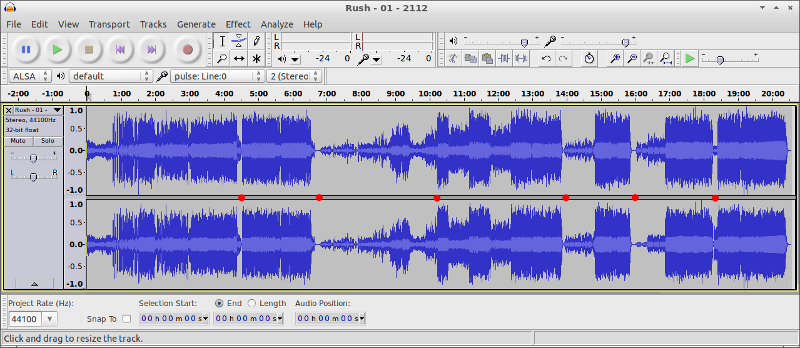

Epic. And perhaps deserving of a bit of attention, all these years later [released 1976].
Two views, very little common ground [both from the same amazon.com page]
At this point in his career, Geddy Lee had an extremely high voice and was often screaming.
“The inspiration behind it was … it ended up being quite similar to a book called Anthem by the writer Ayn Rand. But I didn't realize that while I was working on it …”
-Neil Pert
“I lie awake, staring out at the bleakness of Megadon. City and sky become one, merging into a single plane, a vast sea of unbroken grey. The Twin Moons, just two pale orbs as they trace their way across the steely sky. I used to think I had a pretty good life here, just plugging into my machine for the day, then watching Templevision or reading a Temple Paper in the evening.
“My friend Jon always said it was nicer here than under the atmospheric domes of the Outer Planets. We have had peace since 2062, when the surviving planets were banded together under the Red Star of the Solar Federation. The less fortunate gave us a few new moons. I believed what I was told. I thought it was a good life, I thought I was happy. Then I found something that changed it all …”
IV. Presentation
…
I can’t believe you’re saying
These things just can’t be true
Our world could use this beauty
Just think what we might do
Listen to my music
And hear what it can do
There’s something here as strong as life
I know that it will reach you
Don’t annoy us further!
We have our work to do
Just think about the average
What use have they for you?
Another toy will help destroy
The elder race of man
Forget about your silly whim
It doesn’t fit the Plan!

For this 5 minute presentation, I compressed the 20 minutes of music into 1 minute using the magic of digital signal processing [different from playing a tape or record at a faster speed]. You can find the file below.